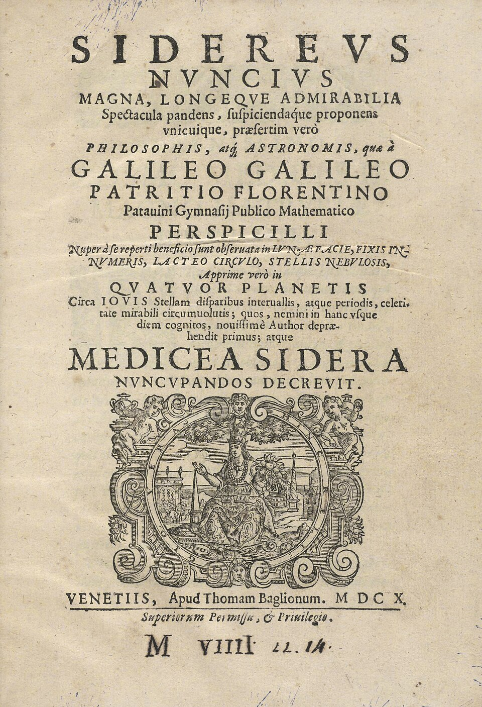

Un matemático de Padua publica lo que vio con su anteojo: montañas en la Luna y cuatro lunas en Júpiter
Galileo Galilei da a la imprenta el Sidereus Nuncius, el mensajero de las estrellas, donde relata lo que ningún ojo humano había visto. El cielo, que se juraba perfecto e inmutable, amaneció con montañas.

Salió esta semana de las prensas venecianas del impresor Baglioni un libro pequeño en latín, de apenas medio centenar de hojas, que ya se disputan príncipes, embajadores y curiosos: el Sidereus Nuncius, el mensajero de las estrellas. Su autor, Galileo Galilei, matemático del Estudio de Padua, cuenta en él, con figuras dibujadas de su propia mano, lo que vio en las noches de este invierno apuntando al cielo un anteojo de su fabricación: que la Luna no es la esfera pulida y perfecta de los filósofos, sino un país de montañas y valles como el nuestro, medidos por sus sombras; que hay en el cielo millares de estrellas que nadie había visto; y que en torno a Júpiter giran cuatro astros nuevos.
El instrumento tiene historia reciente y humilde: hace dos años corrió la noticia de que unos fabricantes de lentes de Flandes habían dado con un tubo que acerca lo lejano. Galileo no lo inventó, pero lo rehízo con tal arte que donde aquéllos aumentaban tres veces, el suyo aumenta veinte y más. El verano pasado lo mostró a los senadores de esta Serenísima desde el campanario de San Marcos, y los mercaderes comprobaron que se veían las naves en el mar dos horas antes que a simple vista: la República le dobló el salario en el acto. Nadie sospechaba entonces que el verdadero negocio estaba en apuntar el tubo hacia arriba.
Lo de Júpiter es lo que más da que hablar a los doctos. Desde enero, noche tras noche, Galileo vio junto al planeta tres y luego cuatro estrellitas que mudan de lugar, ahora a levante, ahora a poniente, sin apartarse nunca de él: no hay otra cuenta posible, escribe, sino que giran a su alrededor como nuestra Luna gira en torno a la Tierra. Las ha bautizado astros mediceos, en honor de Cosme de Médicis, gran duque de Toscana, de quien fue maestro de matemáticas y de cuya corte espera plaza; que también por el cielo, murmuran en el Rialto, se hace carrera en la tierra.
De la Vía Láctea, esa faja lechosa sobre la que disputaron los antiguos, el anteojo da sentencia: no es vapor ni humor celeste, sino un enjambre de estrellas innumerables y apretadas. No todos se rinden: hay filósofos que se niegan a mirar por el tubo, y otros que, habiendo mirado, juran que el vidrio engaña y pinta lo que no hay, pues nada puede haber en el cielo que los antiguos no supieran. Galileo, que perdió noches enteras al sereno y no oculta el frío pasado ni el cansancio de los ojos, responde con el remedio más llano del mundo: que cada cual se procure un buen anteojo y mire.
Este diario dio cuenta, hace sesenta y siete años, del libro de un canónigo polaco que ponía al Sol quieto en el centro y a la Tierra a dar vueltas: hipótesis de matemáticos, se dijo entonces para sosiego de todos. Pero si en torno a Júpiter giran cuatro lunas, ya no es verdad que todo lo del cielo gire alrededor de la Tierra, y algo del viejo edificio ha crujido esta semana en una imprenta de Venecia. Quede para los años venideros juzgar adónde lleva este tubo de lentes; por lo pronto, conviene anotar que el cielo resultó más grande que sus libros, y que hay maneras nuevas de tener razón.